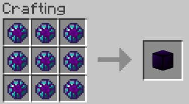

Enderite
A material faster and stronger than Netherite, but not as durable.
Obtaining
To get Enderite, you must go to The End Dimension and mine endstone, endstone has a low chance of dropping an Enderite Shard. However, fortune does NOT effect the odds of Enderite Shards dropping. The crafting recipe bellow shows how to get an Enderite Gem from these shards.
Information
Once an Enderite Gem is obtained, it can be used to create Enderite armor and tools. See the following links for information on each. Enderite Tools Enderite Armor. Enderite can also be crafted into a block using the recipe bellow. These blocks can be used to make beacons.
